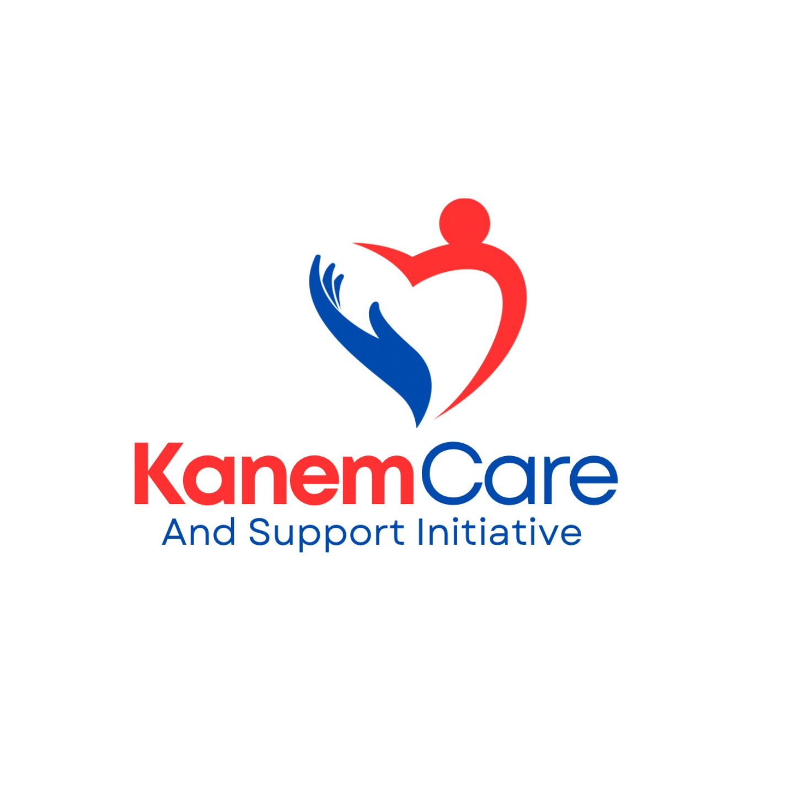

Here are some of the projects I've worked on, showcasing my skills
and experience in software development.
3hf
HEARTS AND HANDS HUMANITARIAN FOUNDATION(3HF) is a non-profit,
non-political organization dedicated to providing humanitarian
services to the less privileged and vulnerable individuals.

KanemCare
KanemCare is a non-profit, non-governmental organization
dedicated to advocating for and empowering vulnerable children
and women in underserved communities.